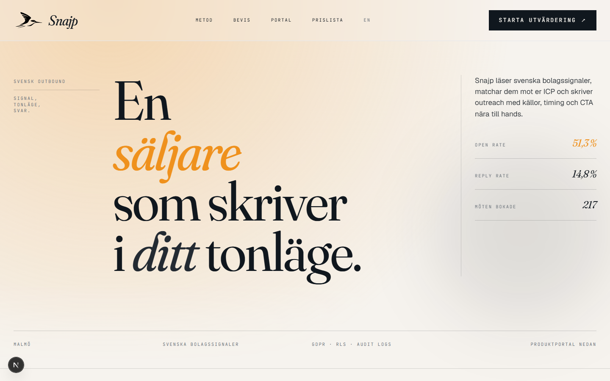
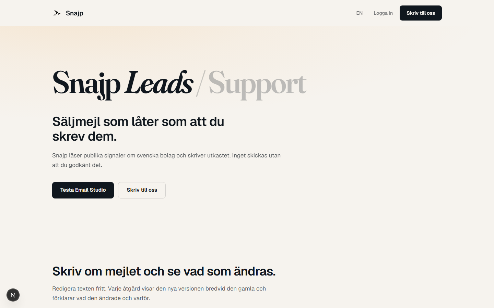
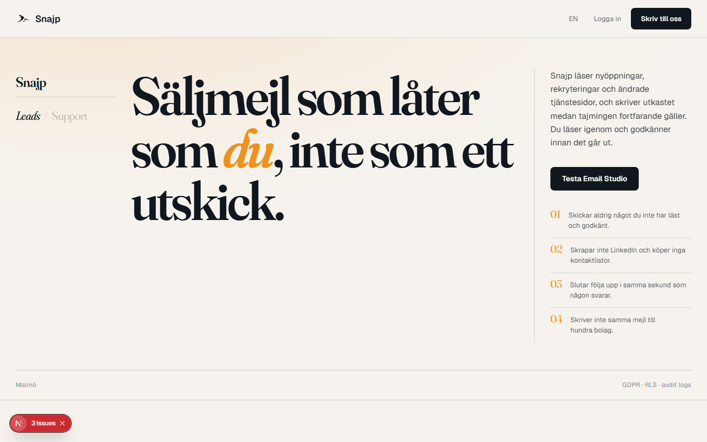
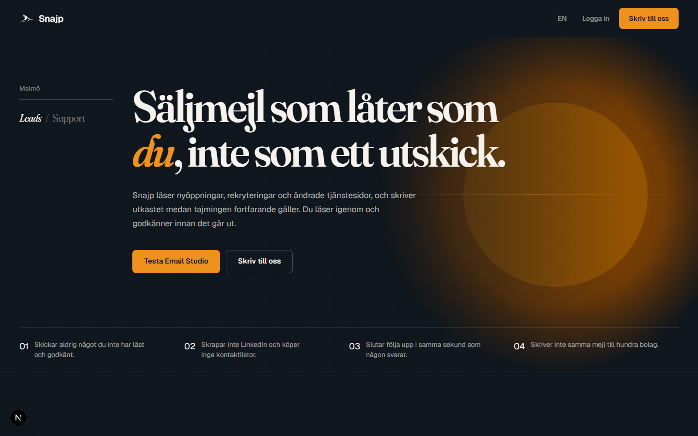
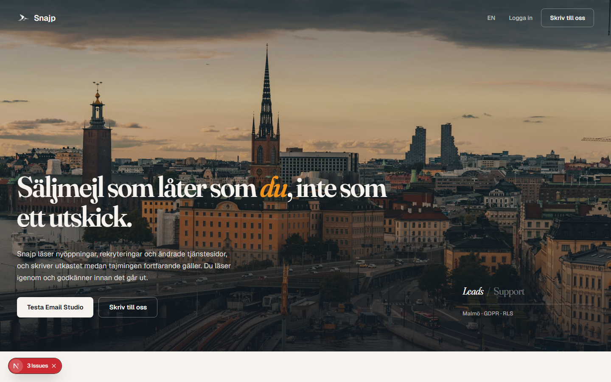

<meta charset="utf-8">
<meta name="viewport" content="width=device-width, initial-scale=1">
<title>Snajp — five versions, and what separated them</title>
<meta name="description" content="A landing page rebuilt five times. What changed between the version that passed every check and the one that was actually good.">
<link rel="preconnect" href="https://fonts.googleapis.com">
<link rel="preconnect" href="https://fonts.gstatic.com" crossorigin>
<link href="https://fonts.googleapis.com/css2?family=Fraunces:ital,opsz,wght,SOFT@0,9..144,300..700,30..100;1,9..144,300..700,30..100&family=Geist:wght@400;450;500;600;700&display=swap" rel="stylesheet">

<style>
  :root{
    --ink:0.20 0.018 252; --ink2:0.28 0.018 252;
    --paper:0.965 0.008 88; --paper2:0.93 0.012 88;
    --ochre:0.74 0.16 64; --moss:0.42 0.071 142; --danger:0.57 0.18 27;
    --ease:cubic-bezier(0.16,1,0.3,1);
    --disp:"Fraunces",ui-serif,Georgia,serif;
    --body:"Geist",ui-sans-serif,system-ui,sans-serif;
  }
  *{box-sizing:border-box}
  html{overflow-x:clip;scroll-behavior:smooth}
  body{
    margin:0;overflow-x:clip;background:oklch(var(--ink));color:oklch(var(--paper));
    font-family:var(--body);font-size:17px;line-height:1.6;text-wrap:pretty;
    -webkit-font-smoothing:antialiased;
  }
  a{color:inherit;text-decoration:none;transition:color 180ms var(--ease)}
  a:hover{color:oklch(var(--ochre))}
  .wrap{max-width:1320px;margin:0 auto;padding:0 24px}
  @media(min-width:768px){.wrap{padding:0 40px}}

  .disp{font-family:var(--disp);font-weight:600;letter-spacing:-0.03em;line-height:1.02}
  .acc{font-style:italic;color:oklch(var(--ochre));font-variation-settings:"opsz" 144,"SOFT" 60}
  .label{font-size:0.8125rem;font-weight:500;letter-spacing:0.02em;color:oklch(var(--paper)/0.45)}
  .num{font-family:var(--disp);font-variation-settings:"opsz" 144,"SOFT" 30;font-feature-settings:"tnum";color:oklch(var(--ochre));line-height:0.8}

  header{position:sticky;top:0;z-index:30;background:oklch(var(--ink)/0.85);backdrop-filter:blur(20px);border-bottom:1px solid oklch(var(--paper)/0.10)}
  header .wrap{display:flex;align-items:center;justify-content:space-between;gap:16px;padding-top:14px;padding-bottom:14px}
  .brand{font-family:var(--disp);font-weight:600;font-size:19px;letter-spacing:-0.02em}

  /* HERO */
  .hero{position:relative;overflow:hidden;border-bottom:1px solid oklch(var(--paper)/0.10)}
  .glow{position:absolute;inset:0;pointer-events:none;
    background:radial-gradient(70% 55% at 82% 8%, oklch(var(--ochre)/0.20) 0%, transparent 62%)}
  .hero .wrap{position:relative;padding-top:72px;padding-bottom:64px}
  @media(min-width:768px){.hero .wrap{padding-top:112px;padding-bottom:96px}}
  h1{margin:0;font-size:clamp(2.5rem,6.4vw,5.5rem)}
  .lede{margin:32px 0 0;max-width:56ch;font-size:1.125rem;line-height:1.7;color:oklch(var(--paper)/0.72)}

  /* THE NUMBER BAND */
  .band{border-bottom:1px solid oklch(var(--paper)/0.10);background:oklch(var(--ink2)/0.45)}
  .band .wrap{display:grid;gap:4px 40px;padding-top:36px;padding-bottom:36px;grid-template-columns:1fr}
  @media(min-width:640px){.band .wrap{grid-template-columns:repeat(2,1fr)}}
  @media(min-width:1024px){.band .wrap{grid-template-columns:repeat(4,1fr)}}
  .stat{display:flex;gap:18px;align-items:baseline;padding:14px 0;border-top:1px solid oklch(var(--paper)/0.12)}
  .stat .num{font-size:2.25rem;flex:none}
  .stat p{margin:0;font-size:0.9375rem;line-height:1.45;color:oklch(var(--paper)/0.65)}

  section{border-bottom:1px solid oklch(var(--paper)/0.10)}
  section .wrap{padding-top:80px;padding-bottom:80px}
  @media(min-width:768px){section .wrap{padding-top:120px;padding-bottom:120px}}
  h2{margin:20px 0 0;font-size:clamp(1.875rem,4vw,3.25rem)}
  h3{margin:0;font-family:var(--disp);font-weight:600;font-size:1.3125rem;letter-spacing:-0.015em;line-height:1.25}
  .two{display:grid;gap:48px}
  @media(min-width:1024px){.two{grid-template-columns:7fr 5fr;gap:72px}}
  .body{font-size:1.0625rem;line-height:1.75;color:oklch(var(--paper)/0.70)}
  .body p{margin:0 0 18px}
  .body p:last-child{margin-bottom:0}
  .body strong{color:oklch(var(--paper));font-weight:600}

  /* the failure/fix table */
  table{width:100%;border-collapse:collapse;margin-top:36px;font-size:0.9375rem}
  th,td{text-align:left;padding:14px 12px 14px 0;border-top:1px solid oklch(var(--paper)/0.12);vertical-align:top}
  th{font-weight:500;color:oklch(var(--paper)/0.45);font-size:0.8125rem;letter-spacing:0.02em}
  td:first-child{color:oklch(var(--paper)/0.9)}
  .bad{color:oklch(var(--danger));font-variant-numeric:tabular-nums;white-space:nowrap}
  .good{color:oklch(var(--moss));font-variant-numeric:tabular-nums;white-space:nowrap}
  .was{color:oklch(var(--paper)/0.45);font-variant-numeric:tabular-nums;white-space:nowrap}

  /* version gallery */
  .versions{display:grid;gap:56px;margin-top:56px}
  figure{margin:0}
  figure img{width:100%;height:auto;display:block;border:1px solid oklch(var(--paper)/0.14);background:oklch(var(--ink2))}
  figcaption{margin-top:14px;display:flex;gap:14px;align-items:baseline;flex-wrap:wrap}
  figcaption .num{font-size:1.5rem}
  figcaption .t{font-family:var(--disp);font-weight:600;font-size:1.125rem;letter-spacing:-0.015em}
  figcaption .d{font-size:0.9375rem;color:oklch(var(--paper)/0.6);flex:1 1 32ch;min-width:0}
  .verdict{display:inline-block;margin-top:10px;font-size:0.8125rem;letter-spacing:0.02em}
  .v-fail{color:oklch(var(--danger))}
  .v-mid{color:oklch(var(--paper)/0.55)}
  .v-win{color:oklch(var(--ochre))}

  /* the two keys */
  .keys{display:grid;gap:36px;margin-top:56px}
  @media(min-width:900px){.keys{grid-template-columns:1fr 1fr;gap:56px}}
  .key{border-top:1px solid oklch(var(--paper)/0.20);padding-top:26px}
  .key .num{font-size:clamp(2.75rem,5vw,4rem);display:block;margin-bottom:18px}
  .key h3{margin-bottom:14px}

  /* checklist */
  ol.checks{margin:40px 0 0;padding:0;list-style:none;counter-reset:c}
  ol.checks li{counter-increment:c;display:grid;grid-template-columns:auto 1fr;gap:20px;
    border-top:1px solid oklch(var(--paper)/0.12);padding:18px 0}
  ol.checks li::before{content:counter(c,decimal-leading-zero);
    font-family:var(--disp);font-variation-settings:"opsz" 144;font-feature-settings:"tnum";
    color:oklch(var(--ochre));font-size:1.375rem;line-height:1.1}
  ol.checks p{margin:0;font-size:1rem;line-height:1.6;color:oklch(var(--paper)/0.72)}
  ol.checks code{font-family:ui-monospace,monospace;font-size:0.875em;color:oklch(var(--paper)/0.9)}

  footer .wrap{display:flex;flex-wrap:wrap;gap:16px;justify-content:space-between;align-items:center;padding-top:36px;padding-bottom:36px}

  @media(prefers-reduced-motion:reduce){*{animation-duration:0.01ms !important;transition-duration:0.01ms !important;scroll-behavior:auto !important}}
</style>

<header>
  <div class="wrap">
    <span class="brand">Snajp</span>
    <span class="label">Fem versioner · juli 2026</span>
  </div>
</header>

<main>
  <div class="hero">
    <div class="glow" aria-hidden="true"></div>
    <div class="wrap">
      <h1 class="disp">Samma sida, fem gånger. <span class="acc">Fyra</span> var sämre.</h1>
      <p class="lede">
        En landningssida byggd om fem gånger. En av versionerna klarade varje mekanisk kontroll
        och var ändå tom. Det här är vad som skilde den från den som faktiskt blev bra.
      </p>
    </div>
  </div>

  <div class="band">
    <div class="wrap">
      <div class="stat"><span class="num">106</span><p>linjer i originalet.<br>Omdesignen hade <span class="bad">2</span>.</p></div>
      <div class="stat"><span class="num">30</span><p>accentfärg i displaystorlek.<br>Omdesignen hade <span class="bad">0</span>.</p></div>
      <div class="stat"><span class="num">6</span><p>fel hittade <em>efter</em> att sidan såg klar ut.</p></div>
      <div class="stat"><span class="num">2</span><p>av mina egna mätningar var falska.</p></div>
    </div>
  </div>

  <section id="failure">
    <div class="wrap">
      <span class="label">Misslyckandet</span>
      <div class="two">
        <div>
          <h2 class="disp">Den passerade varje kontroll och var <span class="acc">ändå</span> tom.</h2>
        </div>
        <div class="body">
          <p>
            Första omdesignen verifierades noggrant: inga skuggor, inga påhittade mätvärden,
            rätt tokens, noll horisontell overflow, alla träffytor över 44 pixlar. Varje
            påstående var sant.
          </p>
          <p>
            <strong>Ingen av dem mätte om något fanns där.</strong> Skärmdumparna hade slutat
            fungera tidigt, och i stället för att lösa det ersattes de med kontroller av
            beräknad CSS. Det är fullt möjligt att klara varje mekanisk regel och leverera en
            tom sida. Det var precis vad som hände.
          </p>
        </div>
      </div>

      <table>
        <thead>
          <tr><th>Mätvärde</th><th>Originalet</th><th>Omdesignen</th><th>Slutversionen</th></tr>
        </thead>
        <tbody>
          <tr><td>Hårfina linjer</td><td class="was">106</td><td class="bad">2</td><td class="good">13</td></tr>
          <tr><td>Ochre i displaystorlek</td><td class="was">30</td><td class="bad">0</td><td class="good">11</td></tr>
          <tr><td>Mono-element</td><td class="was">134</td><td class="bad">0</td><td class="good">0</td></tr>
          <tr><td>Displaysteg</td><td class="was">6</td><td class="bad">1</td><td class="good">6</td></tr>
          <tr><td>Distinkta typsnittsstorlekar</td><td class="was">20</td><td class="bad">9</td><td class="good">15</td></tr>
          <tr><td>Bilder</td><td class="was">1</td><td class="bad">1</td><td class="good">7</td></tr>
        </tbody>
      </table>

      <div class="two" style="margin-top:56px">
        <div class="body">
          <p>
            Mekanismen var inte en fråga om smak. Sju texturlager togs bort och ett lades till:
            plan i <code>paper2</code>, som ligger 0,035 OKLCH-ljushet från <code>paper</code> och
            därför är nästan osynligt.
          </p>
        </div>
        <div class="body">
          <p>
            <strong>Orsaken låg i designsystemet självt.</strong> Det var skrivet helt som förbud.
            Inga skuggor, inga ramar, accent under 5%, ingen mono, inga underrubriker. Ingen regel
            beskrev vad som <em>skapar</em> visuellt intresse, så en sida som följde alla regler
            var med nödvändighet tom.
          </p>
        </div>
      </div>
    </div>
  </section>

  <section id="versions">
    <div class="wrap">
      <span class="label">Versionerna</span>
      <h2 class="disp">Fem försök, i ordning.</h2>

      <div class="versions">
        <figure>
          
          <figcaption>
            <span class="num">01</span>
            <span class="t">Originalet</span>
            <span class="d">Redaktionell, full av karaktär. Byggd på påhittade mätvärden och en
            uppdiktad kundlista. 10 200 pixlar hög, med 34–40 överflödande element vid varje
            brytpunkt inklusive desktop.</span>
          </figcaption>
          <span class="verdict v-mid">Själ, men oärlig och trasig</span>
        </figure>

        <figure>
          
          <figcaption>
            <span class="num">02</span>
            <span class="t">Omdesignen</span>
            <span class="d">Nordisk SaaS, ärlig copy, verifierad responsivitet. Använder halva
            ytan. Ordmärket var större än värdeerbjudandet. Klarade varje kontroll.</span>
          </figcaption>
          <span class="verdict v-fail">Passerade allt. Var tom.</span>
        </figure>

        <figure>
          
          <figcaption>
            <span class="num">03</span>
            <span class="t">Förenklat original</span>
            <span class="d">Originalets språk, kortat från 10 200 till 2 930 pixlar. Påhittade
            siffror och sju sektioner mockdata borta. Av 78 mono-etiketter återstår två.</span>
          </figcaption>
          <span class="verdict v-mid">Lättast: LCP 344 ms</span>
        </figure>

        <figure>
          
          <figcaption>
            <span class="num">04</span>
            <span class="t">Grafik-ledd</span>
            <span class="d">Ritad sol i inline-SVG, noll bildfiler. Solens kärna låg först på
            <code>oklch(0.80)</code> och gav 2,12:1 mot texten. Formen var problemet, inte
            scrimen.</span>
          </figcaption>
          <span class="verdict v-mid">Inga externa beroenden alls</span>
        </figure>

        <figure>
          
          <figcaption>
            <span class="num">05</span>
            <span class="t">Foto-ledd</span>
            <span class="d">Fyra fotografier, parallax, mörkt statement-band, grid-break. Åtta
            sektioner. Den enda som säger "svensk B2B" utan att skriva orden.</span>
          </figcaption>
          <span class="verdict v-win">Vald. LCP 440 ms, CLS 0.</span>
        </figure>
      </div>
    </div>
  </section>

  <section id="keys">
    <div class="wrap">
      <span class="label">Vad som gjorde skillnaden</span>
      <h2 class="disp">Två saker, och båda är <span class="acc">obekväma</span>.</h2>

      <div class="keys">
        <div class="key">
          <span class="num">01</span>
          <h3>Egna ögon på varje referens och varje output</h3>
          <div class="body">
            <p>
              Inte läsa koden och resonera. Inte hävda att beräknad CSS är korrekt.
              <strong>Rendera, fånga, öppna bilden, titta.</strong>
            </p>
            <p>
              Referenserna fångades och lästes innan en rad skrevs, vilket gav fakta som minnet
              hade fått fel: både Legora och Sinch <em>centrerar</em> sina heron, Sinch färgar ord
              inuti rubriken i stället för att byta typsnitt, Calyx blandar rak och kursiv i samma
              rad.
            </p>
            <p>
              Följdsatsen: <strong>när en mätning säger något annat än ögonen, misstro mätningen
              först.</strong> Två av mina var fel. En som såg ut som ett mätfel var äkta.
            </p>
          </div>
        </div>

        <div class="key">
          <span class="num">02</span>
          <h3>Sluta inte vid första acceptabla resultat</h3>
          <div class="body">
            <p>
              Varje omgång <em>efter</em> att sidan såg klar ut hittade ett verkligt fel. Det är
              hela argumentet.
            </p>
            <p>
              Rubriken som bröt ett ord per rad. Avdelarfotot som läste kallblått mot en varm
              palett. En egen Tailwind-klass som blev noll vid exakt 1440 pixlar och tystade
              grid-breaken vid den vanligaste desktopbredden. Reveal-systemet som lämnade sidan
              blank utan JavaScript. <code>html lang</code> som stod kvar på svenska efter
              språkbyte, så en skärmläsare hade läst engelska med svensk fonetik. Samma grafiska
              form använd tre gånger så den läste som en fläck.
            </p>
            <p>
              <strong>Omgången som inte hittar något är signalen att sluta</strong>, inte omgången
              som levererar något acceptabelt.
            </p>
          </div>
        </div>
      </div>
    </div>
  </section>

  <section id="checks">
    <div class="wrap">
      <span class="label">Kontrollerna</span>
      <h2 class="disp">Kör dem i den här ordningen. Titta på varje utfall.</h2>
      <ol class="checks">
        <li><p>Fånga och <strong>läs</strong> vikning, hela sidan och mobil. En skärmdump du inte öppnat räknas inte.</p></li>
        <li><p>Squint-test: 5 pixlar oskärpa. Visar hierarki utan innehåll, och avslöjade det tomma facket i ett rutnät med tre poster på två kolumner.</p></li>
        <li><p>Overflow via <strong>elementgränser</strong> över åtta bredder och två rörelselägen. Inte <code>scrollWidth</code> — <code>overflow-x: clip</code> gör den blind.</p></li>
        <li><p>Tabba igenom: fokusring på varje stopp, ingen fälla, inget fokus utanför skärmen.</p></li>
        <li><p>Kontrast med <strong>texten dold</strong>, samplad mot ren bakgrund. Samplar du en skärmdump med glyfer i mäter du textfärg mot textfärg.</p></li>
        <li><p>Reveal-systemet med JavaScript avstängt.</p></li>
        <li><p>Produktionsbygge, sedan LCP och CLS. Dev-buntens storlek betyder ingenting: 3,8 MB mot 650 KB här.</p></li>
      </ol>
    </div>
  </section>

  <section id="images">
    <div class="wrap">
      <span class="label">Bilderna</span>
      <div class="two">
        <div>
          <h2 class="disp">"Använd bilder" såg blockerat ut. Det var det <span class="acc">inte</span>.</h2>
        </div>
        <div class="body">
          <p>
            Det finns inget bildgenereringsverktyg i den här sessionen, vilket bekräftades genom
            att söka snarare än att anta. Slutsatsen "då kan jag inte använda bilder" var ändå fel.
          </p>
          <p>
            Svaret låg i källkoden till referensdemona: de <strong>hotlänkar riktiga
            Unsplash-fotografier</strong> och handskriver SVG. En kommentar i deras kod säger till
            och med <code>/* Verified-existing Unsplash photos */</code>, och en annan noterar att
            en bild byttes ut för att den var för ljus bakom text.
          </p>
          <p>
            Förmågan saknades aldrig. Antagandet om vad "generera" betydde var fel. 27 kandidater
            söktes fram, renderades i ett kontaktark, granskades med ögonen, och de generiska
            skrivbordsklichéerna föll direkt.
          </p>
        </div>
      </div>
    </div>
  </section>
</main>

<footer>
  <div class="wrap">
    <span class="brand">Snajp</span>
    <span class="label">Processdokumentation · Alunix</span>
  </div>
</footer>
